Справочник по Git и GitHub · модуль 3 · ветки
Глава 3.4
Конфликты:
как получить и как разобрать
В главе разобрано, что происходит, когда две ветки меняют одно и то же место файла. На проекте sait-vizitka получены два конфликта: в заголовке главной страницы и в конце файла стилей. Первый разобран вручную в обычном редакторе, второй — в редакторе слияния VS Code. Показано, как читать метки конфликта, чем опасна кнопка Accept Both Changes и как отменить слияние, которое начато не вовремя.
- Категория
- Ветки
- Уровень
- Начальный
- Что получится
- Два разобранных конфликта и два коммита слияния в
main - Сколько занимает
- Около сорока минут за компьютером
§1Задача главы
В главе 3.3 Git свёл ветки без участия человека: ветка формы меняла kontakty.html и styles.css, а в main менялся index.html. Так бывает, когда ветки меняют разные файлы или разные места одного файла. В этой главе две ветки меняют одну и ту же строку.
Ассоциация: два редактора одной статьи
Два редактора получили копии одной статьи. Первый поправил второй абзац, второй — пятый. Правки собирают в одну статью без вопросов. Если же оба переписали один и тот же заголовок, каждый по-своему, выбрать вариант может только автор.
Правки в разных местах Git собирает сам. Когда обе ветки изменили одно место по-разному, Git останавливает слияние и записывает в файл обе версии. Слияние остаётся незавершённым, пока человек не выберет итоговый текст.
Где не совпадаетРедактор сравнивает правки по смыслу, а Git — по строкам. Поэтому для Git конфликт возникает и тогда, когда две ветки дописали разные строки в одно и то же место. По смыслу такие строки друг другу не мешают.
Конфликт слияния (merge conflict) — остановка слияния, когда обе ветки после общего предка изменили одно и то же место файла и изменения разные. Чтобы найти такие места, Git сравнивает три версии каждого файла. Первая — в общем предке, вторая — в текущей ветке, третья — в сливаемой ветке. На схеме — два случая рядом.
main (подвал из главы 3.3), и Git берёт её вариант. Во втором строку изменили обе ветки, и Git не выбирает между ними.Если строку изменила одна ветка, Git берёт изменённый вариант: вторая ветка эту строку не трогала, значит, спорить не с чем. Если строку изменили обе ветки и по-разному, у Git нет правила, по которому выбрать. Тогда он записывает обе версии в файл, помечает место конфликта и оставляет слияние незавершённым. Конфликт не стирает ничью работу: обе версии лежат в файле, пока человек не решит, что оставить.
Зачем это нужно в работе
- Командная работа. Два человека правят один файл в своих ветках. Кто сливает вторым, тот и получает конфликт и разбирает его.
- Долгая ветка. Пока ветка задачи живёт неделю, в
mainприходят чужие правки. Чем дольше ветка, тем больше мест, где правки встретятся. - Правильный итог. При разборе решают, какой текст должен остаться. Ошибка на этом шаге попадает в
main, поэтому после разбора файл проверяют глазами. - Возможность отступить. Если конфликт неожиданный или разбирать его сейчас некогда, слияние отменяют, и проект возвращается к состоянию до него.
В главе используется проект sait-vizitka в том виде, в каком он остался после главы 3.3. В нём одна ветка main и 21 коммит, 17 из них на GitHub не отправлены, список изменений пуст. Раздел GRAPH переключён в режим All. Имена коммитов, сделанных вами, будут отличаться от показанных. Первая часть главы — конфликт в одной строке.
Если проекта нет или он в другом состоянии
Архив содержит проект sait-vizitka в том состоянии, с которого начинается глава, — после главы 3.3. В нём файлы проекта, папка .git со всей историей и ветками и адрес origin. Имена коммитов, которые уже есть в архиве, совпадают с показанными в главе. Коммиты, которые вы сделаете по ходу главы, получат свои имена: имя коммита зависит от автора и времени.
- Распакуйте архив в папку, где лежат ваши проекты. Появится папка
sait-vizitka. Если папка с таким именем там уже есть, сначала переименуйте старую, например вsait-vizitka-staraya. - Откройте новую папку в VS Code: File → Open Folder →
sait-vizitka. - Проверьте историю в терминале (Ctrl + `). Ответ должен совпасть с этим:
git log --oneline --graph -4
* ea7f264 Merge branch 'forma-kontaktov'
|\
| * 52b9719 Переименовал кнопку формы
| * e3eeeb9 Добавил отступ над формой
| * a727fbf Добавил форму обратной связи
В строке состояния — main, на кнопке 17↑, список изменений пуст.
Папка .git скрытая: в Finder и Проводнике её по умолчанию не видно, но VS Code и Git работают с ней как обычно. Имя и почту автора для ваших коммитов Git берёт из настроек главы 1.3. Кнопку Sync Changes не нажимайте: адрес origin ведёт в репозиторий автора справочника, и отправить туда коммиты не получится.
§2Шаг 1. Изменить заголовок в новой ветке
Чтобы получить конфликт, нужны две ветки, которые изменят одну строку. Первая — новая ветка zagolovok-s-imenem: в ней в заголовок главной страницы добавляется имя. Создаём её из списка веток в строке состояния, Create new branch…, как в шаге 1 главы 3.2.
git switch -c zagolovok-s-imenem
В index.html меняем строку 9:
<h1>Привет, это мой сайт</h1>
<h1>Привет, я Максим</h1>
Сохраняем файл, отбираем его плюсом и делаем коммит «Добавил имя в заголовок».
git commit -am "Добавил имя в заголовок"
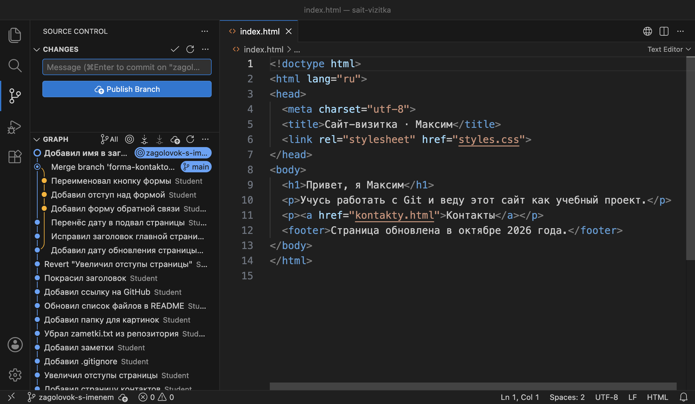
zagolovok-s-imenem. В строке 9 новый заголовок, в графе её коммит стоит над коммитом с меткой main.Ключ -a отбирает в коммит все изменённые файлы, за которыми Git уже следит, — то же, что плюс у заголовка Changes.
Что получилось.В ветке zagolovok-s-imenem коммит 6c986f0 с новым заголовком. Вторая правка той же строки делается в main.
§3Шаг 2. Изменить тот же заголовок в main
Переходим на main. В этой ветке заголовок прежний, потому что коммит с именем сделан в другой ветке. Меняем ту же строку 9, но по-другому:
<h1>Привет, это мой сайт</h1>
<h1>Привет, это мой сайт-визитка</h1>
Сохраняем и делаем коммит «Уточнил заголовок главной страницы».
git switch main git commit -am "Уточнил заголовок главной страницы"
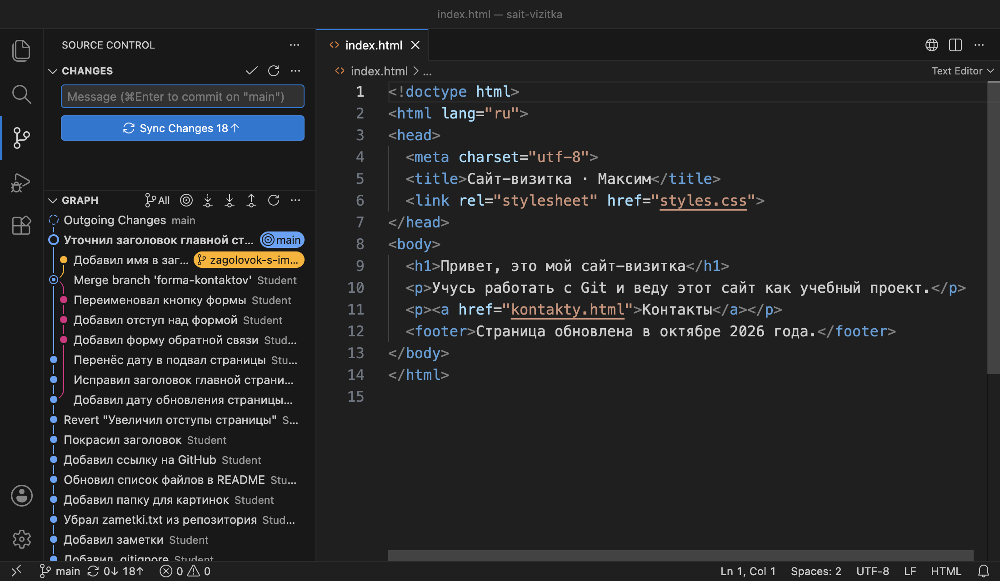
main. В строке 9 вариант main. В графе две линии: коммит main и коммит ветки zagolovok-s-imenem.git log --oneline --graph --all -3
* 2cc18f6 Уточнил заголовок главной страницы
| * 6c986f0 Добавил имя в заголовок
|/
* ea7f264 Merge branch 'forma-kontaktov'
Общий предок веток — коммит слияния ea7f264 из главы 3.3. После него каждая ветка изменила строку 9, и варианты разные. Это правый случай со схемы в §1.
На схеме — ветки перед слиянием.
ea7f264. В каждой свой коммит со своим вариантом строки 9. Вы стоите на main.Что получилось.Две ветки с разными вариантами одной строки. При слиянии Git не сможет выбрать вариант сам.
§4Шаг 3. Запустить слияние и получить конфликт
Слияние запускается так же, как в главе 3.3: вы стоите на main, палитра команд → Git: Merge... → zagolovok-s-imenem. Git начинает слияние и останавливается:
git merge zagolovok-s-imenem
Auto-merging index.html
CONFLICT (content): Merge conflict in index.html
Automatic merge failed; fix conflicts and then commit the result.
Первая строка — Git начал сводить изменения в index.html. Вторая — в содержимом этого файла конфликт. Третья — автоматическое слияние не удалось, нужно исправить конфликты и сделать коммит. VS Code в этот момент показывает уведомление There are merge conflicts. Please resolve them before committing your changes — «есть конфликты слияния, разберите их перед коммитом».
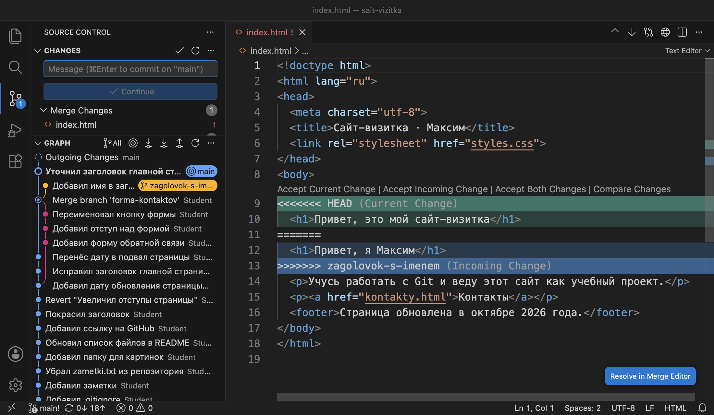
index.html. В файле строки 9–13 с метками, над ними кнопки разбора. В панели раздел Merge Changes.| Что видно в окне | Что это значит |
|---|---|
Раздел Merge Changes, у файла ! | Файлы с неразобранными конфликтами. Пока список не пуст, слияние не завершить |
| Кнопка Continue вместо Commit | Идёт слияние. Кнопка завершит его коммитом, когда конфликтов не останется |
В строке состояния main! | Восклицательный знак — в ветке незавершённое слияние |
Вкладка index.html ! | В этом файле есть метки конфликта |
| Кнопка Resolve in Merge Editor | Открывает редактор слияния — отдельную вкладку для разбора |
То же состояние показывает git status:
git status On branch main Your branch is ahead of 'origin/main' by 18 commits. (use "git push" to publish your local commits) You have unmerged paths. (fix conflicts and run "git commit") (use "git merge --abort" to abort the merge) Unmerged paths: (use "git add <file>..." to mark resolution) both modified: index.html no changes added to commit (use "git add" and/or "git commit -a") git status --short UU index.html
Git пишет: есть неслитые файлы (unmerged paths), index.html изменили обе ветки (both modified). Подсказки в скобках перечисляют три действия: исправить конфликт и сделать коммит, отметить файл разобранным командой git add или отменить слияние. В коротком ответе буквы UU (unmerged) означают, что в файле неразобранный конфликт изменений двух веток.
На схеме — состояние после остановки.
main стоит на прежнем коммите 2cc18f6.Что получилось.Слияние остановлено. Коммита слияния нет, в index.html записаны обе версии строки. Дальше нужно понять, где какая версия.
§5Шаг 4. Прочитать метки конфликта
Место конфликта Git отмечает в самом файле тремя служебными строками. Между ними — обе версии строки 9:
index.html. Сверху версия main, снизу версия сливаемой ветки.Строка <<<<<<< HEAD открывает конфликт. HEAD — ветка, на которой вы стоите и в которую сливаете, здесь main. Ниже до разделителя ======= идёт её версия. VS Code подписывает её Current Change, «текущее изменение». После разделителя — версия сливаемой ветки, подписанная Incoming Change, «входящее изменение». Строка >>>>>>> zagolovok-s-imenem закрывает конфликт и называет эту ветку.
Над конфликтом VS Code ставит строку из четырёх кнопок. Каждая кнопка переписывает текст между метками и удаляет сами метки:
| Кнопка | Что останется на месте конфликта |
|---|---|
| Accept Current Change | Только версия main: <h1>Привет, это мой сайт-визитка</h1> |
| Accept Incoming Change | Только версия ветки: <h1>Привет, я Максим</h1> |
| Accept Both Changes | Обе версии подряд: два заголовка h1 на странице |
| Compare Changes | Ничего не меняет, открывает две версии рядом для сравнения |
Для этого конфликта ни одна кнопка не даёт нужного результата. Заголовок должен содержать и имя, и слово «сайт-визитка», то есть итоговый текст нужно написать самому.
Что получилось.Известно, где версия main, где версия ветки и что дала бы каждая кнопка. Итоговый заголовок пишется вручную.
§6Шаг 5. Исправить файл
Файл с конфликтом правят так же, как любой текстовый файл. Удаляем строки 9–13 вместе с метками и пишем на их месте итоговый заголовок:
<<<<<<< HEAD <h1>Привет, это мой сайт-визитка</h1> ======= <h1>Привет, я Максим</h1> >>>>>>> zagolovok-s-imenem
<h1>Привет, я Максим, это мой сайт-визитка</h1>
Сохраняем файл.
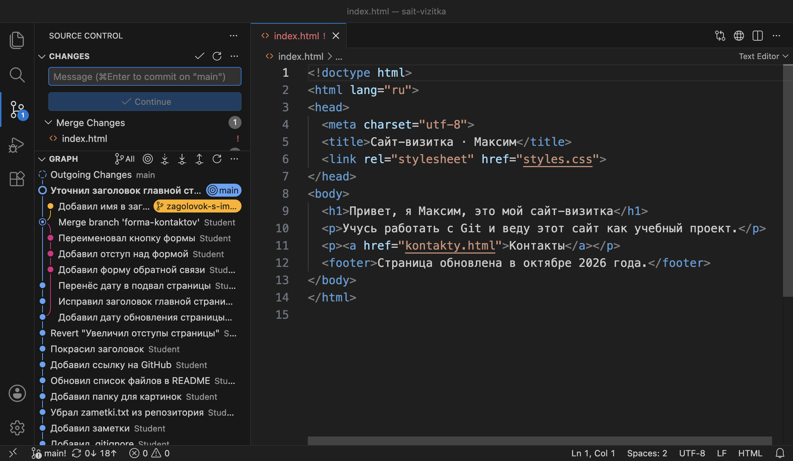
Файл исправлен, но для Git он по-прежнему не слит: отметку о том, что конфликт разобран, ставит человек. Пока файл в разделе Merge Changes, слияние не завершить.
Что получилось.В index.html итоговый заголовок без меток. Осталось отметить файл разобранным.
§7Шаг 6. Отметить файл и завершить слияние
Разобранный файл отмечают тем же плюсом, которым отбирают файл в коммит. Наводим курсор на index.html в разделе Merge Changes и нажимаем +:
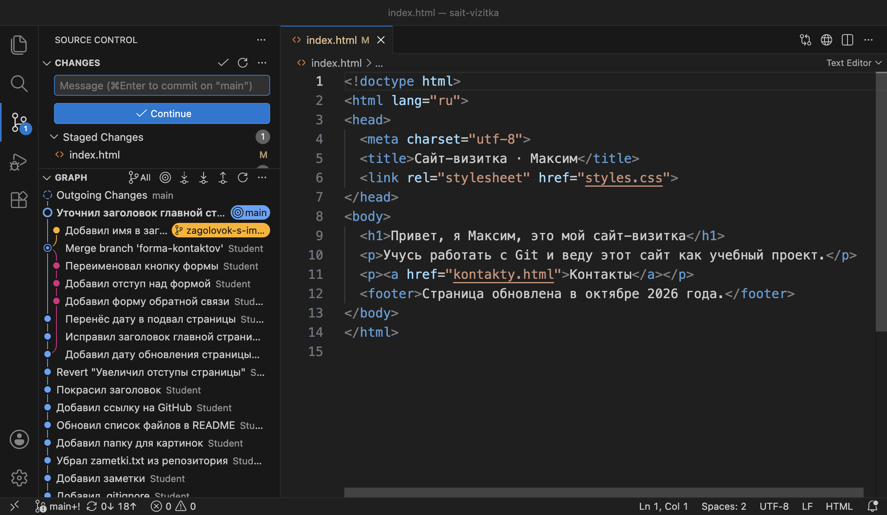
git add index.html git status --short M index.html
Буквы UU сменились на M в первой позиции: файл в индексе, конфликт отмечен разобранным. Перед этим шагом файл проверяют. Если в файле остались метки, VS Code при нажатии плюса переспрашивает. Вопрос такой: Are you sure you want to stage index.html with merge conflicts? — «отметить файл с конфликтами?». Команда git add такого вопроса не задаёт и отмечает файл вместе с метками, после чего они попадают в коммит.
Слияние завершает кнопка Continue. Дальше бывает два случая. Если в поле Message уже стоит сообщение Merge branch 'zagolovok-s-imenem', коммит слияния создаётся сразу. Если поле пустое, VS Code открывает вкладку COMMIT_EDITMSG с готовым сообщением:
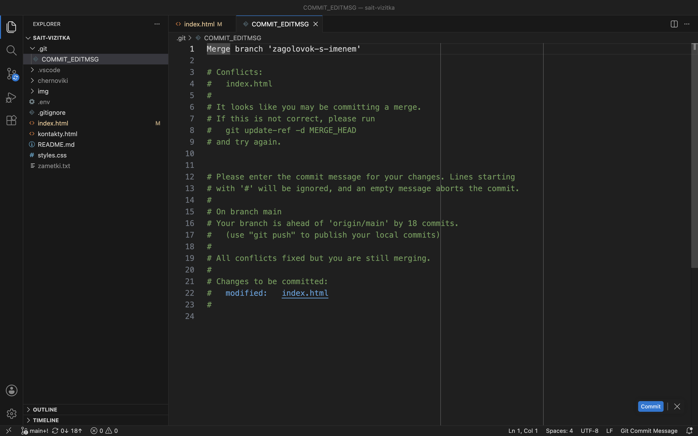
COMMIT_EDITMSG. Первая строка — сообщение коммита. Строки с # — пояснения Git, в коммит они не попадут. Кнопка Commit справа внизу.Сообщение можно оставить как есть или дописать, что выбрано при разборе. Нажимаем Commit в правом нижнем углу вкладки. В терминале то же действие — коммит с готовым сообщением:
git commit --no-edit
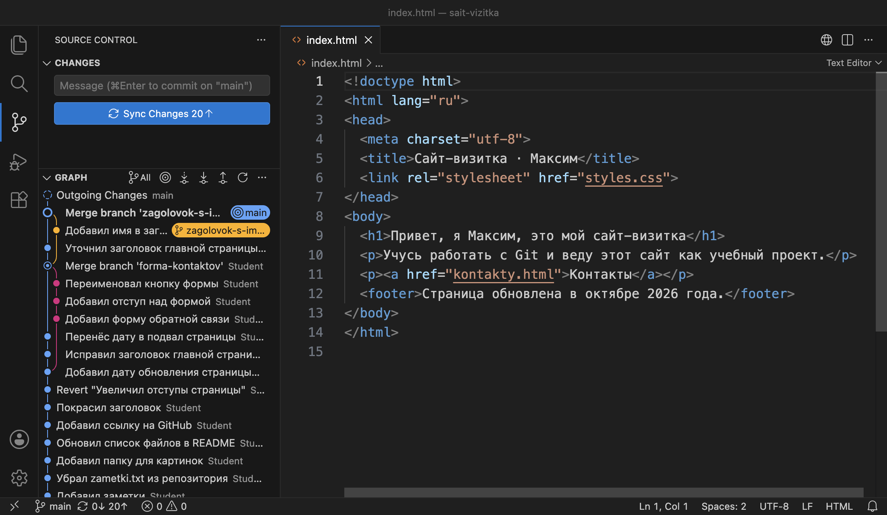
main без восклицательного знака.git log --oneline --graph -4 * 84f13fc Merge branch 'zagolovok-s-imenem' |\ | * 6c986f0 Добавил имя в заголовок * | 2cc18f6 Уточнил заголовок главной страницы |/ * ea7f264 Merge branch 'forma-kontaktov' git branch -d zagolovok-s-imenem Deleted branch zagolovok-s-imenem (was 6c986f0).
Коммит слияния устроен так же, как в главе 3.3: у него два родителя, 2cc18f6 и 6c986f0. Отличие одно: строку 9 в нём записал человек при разборе конфликта. Слитую ветку удаляем.
На схеме — история после разбора.
84f13fc соединил обе линии. Ветка zagolovok-s-imenem удалена, её коммит 6c986f0 остался в истории main.Что получилось.Конфликт разобран, в main коммит слияния 84f13fc с итоговым заголовком. Вторая часть главы — конфликт, при котором разные строки дописаны в одно место.
§8Шаг 7. Получить конфликт в конце файла
Создаём ветку stil-podvala и дописываем в конец styles.css правило для подвала, коммит «Добавил стиль подвала». Затем переходим на main и дописываем в конец того же файла правило для кнопки, коммит «Добавил стиль кнопки».
footer {
margin-top: 40px;
color: #6B6560;
}
button {
padding: 8px 16px;
}
Правила разные и друг другу не мешают. Но обе ветки дописали строки в одно и то же место — после строки 20, которая в общем предке была последней. Git не может определить, в каком порядке их ставить, поэтому слияние stil-podvala в main тоже останавливается:
git merge stil-podvala
Auto-merging styles.css
CONFLICT (content): Merge conflict in styles.css
Automatic merge failed; fix conflicts and then commit the result.
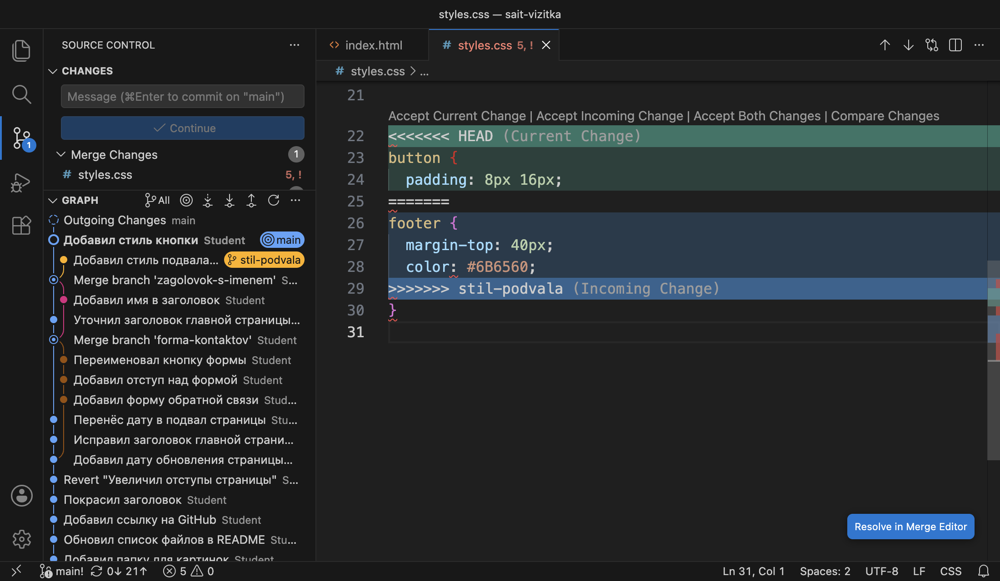
styles.css. Закрывающая скобка } на строке 30 стоит после меток. Метки ломают синтаксис CSS: в строке состояния 5 ошибок.В этом конфликте есть деталь, которую видно не сразу. Последняя строка обоих правил — одинаковая скобка }. Git сравнивает файлы по строкам, считает эту строку общей и выносит её за метки. Поэтому внутри меток у button нет закрывающей скобки, а у footer она одна на двоих, на строке 30.
Отсюда следует, что кнопка Accept Both Changes здесь даст неверный CSS. Она удаляет метки и ставит обе версии подряд:
button {
padding: 8px 16px;
footer {
margin-top: 40px;
color: #6B6560;
}
Правило button осталось без закрывающей скобки, и браузер прочитает footer как часть этого правила. Это проверено на копии проекта. Вывод общий для всех кнопок: после разбора файл перечитывают целиком, включая строки рядом с конфликтом.
На схеме — ветки во время второго конфликта.
84f13fc: в main стиль кнопки, в stil-podvala стиль подвала. Коммита слияния нет, слияние остановлено.Что получилось.Конфликт в конце styles.css. Кнопка Accept Both Changes дала бы сломанный CSS. Прежде чем разбирать его другим способом, слияние отменим.
§9Шаг 8. Отменить слияние
Слияние с конфликтом можно отменить. Это нужно, когда конфликт неожиданный, разбирать его сейчас некогда или слили не ту ветку. Отмена возвращает проект к состоянию перед слиянием: файлы, индекс и история становятся такими, какими были до команды git merge.
В палитре команд выбираем Git: Abort Merge. Окна подтверждения нет.
git merge --abort
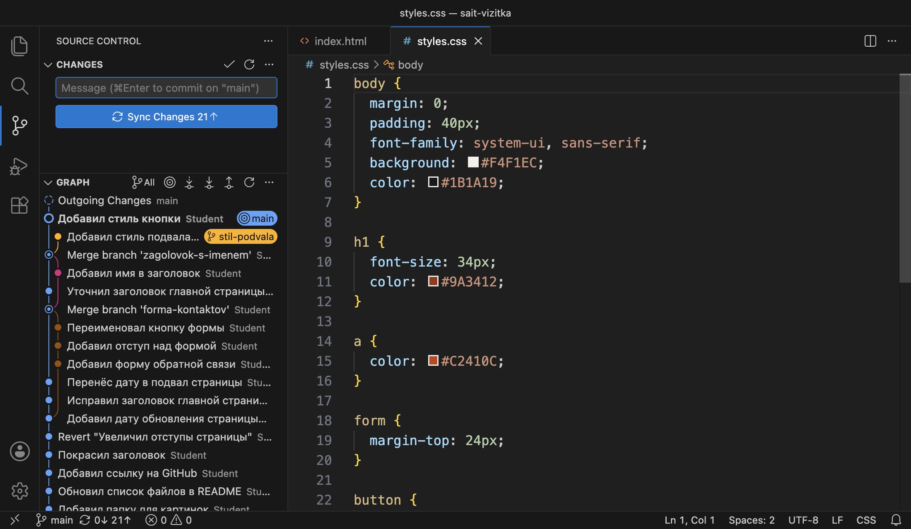
main без восклицательного знака.git status -sb ## main...origin/main [ahead 21] git log --oneline -2 c6508f8 Добавил стиль кнопки 84f13fc Merge branch 'zagolovok-s-imenem'
Изменений нет, последний коммит — «Добавил стиль кнопки», сделанный до слияния. Ветка stil-podvala на месте со своим коммитом, и слияние можно повторить.
Отмена приводит файлы к последнему коммиту. Если перед слиянием в папке были незакоммиченные правки, Git может их не восстановить. Поэтому слияние начинают с пустым списком изменений — то же правило, что в главе 3.3.
Что получилось.Слияние отменено, проект в состоянии до него. Тот же конфликт теперь разбираем в редакторе слияния.
§10Шаг 9. Разобрать конфликт в редакторе слияния
Повторяем слияние: палитра команд → Git: Merge... → stil-podvala. Конфликт тот же. Открываем styles.css и нажимаем кнопку Resolve in Merge Editor справа внизу. Открывается редактор слияния — отдельная вкладка из трёх частей:
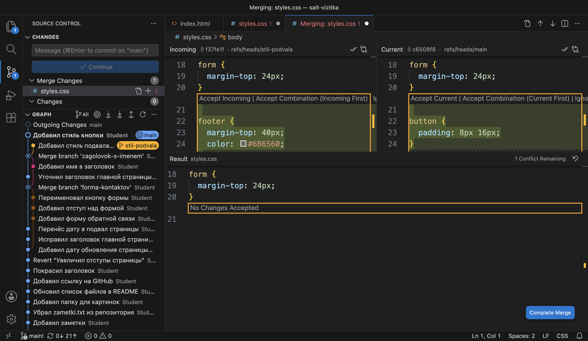
| Часть | Что в ней |
|---|---|
| Incoming, слева вверху | Версия сливаемой ветки stil-podvala, коммит f37fe1f |
| Current, справа вверху | Версия текущей ветки main, коммит c6508f8 |
| Result, внизу | Каким станет файл. Пока выбора нет, на месте конфликта надпись No Changes Accepted, справа счётчик 1 Conflict Remaining |
В верхних частях правила показаны целиком, вместе с закрывающими скобками, поэтому сочетание двух версий здесь получается со всеми скобками. Над версией main есть кнопка Accept Combination (Current First) — «взять обе версии, сначала текущую». Нажимаем её:
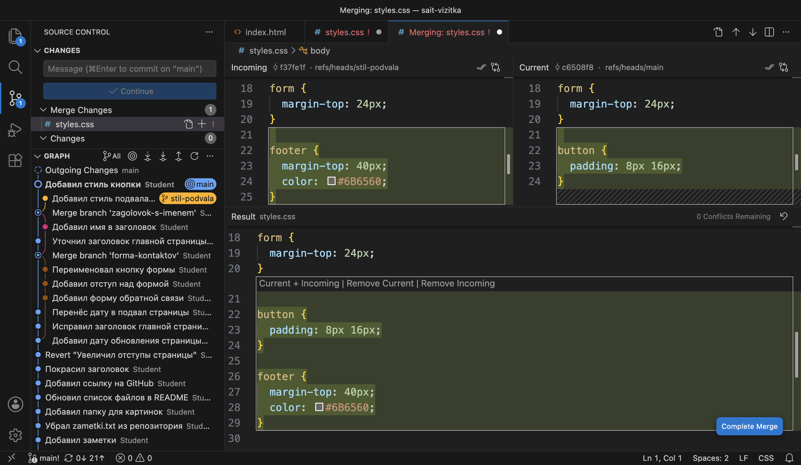
Кнопка Complete Merge справа внизу сохраняет итоговый файл и сразу отмечает его разобранным: styles.css переходит в Staged Changes, отдельно нажимать плюс не нужно.
git status --short
M styles.css
Слияние завершаем, как в шаге 6: Continue, а если откроется вкладка COMMIT_EDITMSG, — Commit в ней. Слитую ветку удаляем.
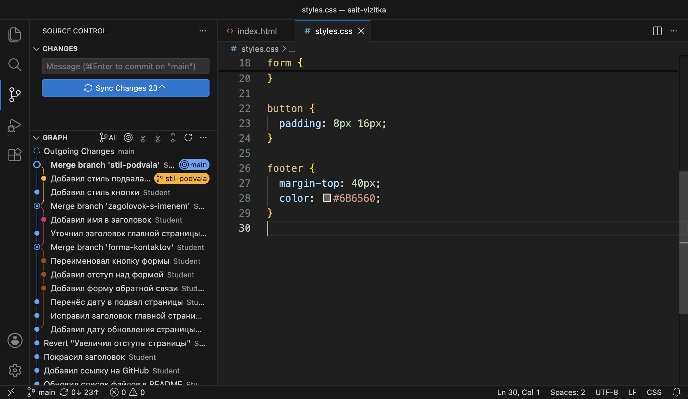
styles.css оба правила, сверху коммит Merge branch 'stil-podvala', на кнопке 23↑.git log --oneline --graph -3 * 0d62db4 Merge branch 'stil-podvala' |\ | * f37fe1f Добавил стиль подвала * | c6508f8 Добавил стиль кнопки |/ git branch -d stil-podvala Deleted branch stil-podvala (was f37fe1f).
На схеме — история после второго слияния.
0d62db4 соединил линии кнопки и подвала. Ветка stil-podvala удалена.Что получилось.Оба конфликта разобраны. В проекте одна ветка main, 27 коммитов, 23 из них на GitHub не отправлены, список изменений пуст. Ниже собраны кнопки и команды главы.
§11Справка: кнопки, команды, как реже получать конфликты
| Что нужно | В VS Code | Команда |
|---|---|---|
| Увидеть файлы с конфликтом | Раздел Merge Changes | git status, в коротком виде буквы UU |
| Оставить версию текущей ветки | Accept Current Change | git checkout --ours файл — для всего файла |
| Оставить версию сливаемой ветки | Accept Incoming Change | git checkout --theirs файл — для всего файла |
| Написать свой вариант | Правка файла, метки удалить | Правка файла в редакторе |
| Разобрать в трёх окнах | Resolve in Merge Editor | Кнопки нет |
| Отметить файл разобранным | Плюс у файла или Complete Merge | git add файл |
| Завершить слияние | Continue, затем Commit во вкладке COMMIT_EDITMSG | git commit --no-edit |
| Отменить слияние | Палитра команд → Git: Abort Merge | git merge --abort |
Команды git checkout --ours и --theirs заменяют весь файл одной из версий. Кнопки VS Code меняют только одно место конфликта. После них файл всё равно отмечают командой git add. Это проверено на копии проекта: после --theirs файл остаётся в состоянии UU.
Конфликты возникают там, где правки встречаются. Поэтому их становится меньше, когда правки встречаются реже:
| Приём | Почему помогает |
|---|---|
| Короткие ветки: задача на день-два | За это время в main приходит меньше чужих правок |
Сливать main в свою ветку по ходу работы | Конфликты появляются по одному и маленькими, пока помнится, что менялось |
| Договориться, кто какие файлы правит | Правки в разных файлах Git сводит сам |
| Не переформатировать весь файл в ветке задачи | Замена отступов или кавычек во всём файле даёт конфликт почти с любой чужой правкой |
§12Частые вопросы
button остаётся без закрывающей скобки. Файл после кнопки перечитывают.git add — и создать коммит слияния кнопкой Continue.git merge --abort возвращают проект к состоянию до слияния.§13Проверьте себя
Ветка main изменила строку 5 файла, а сливаемая ветка эту строку не трогала. Будет ли конфликт?
Нет. Строку изменила одна ветка, и Git возьмёт её вариант. Конфликт возникает, когда одно место изменили обе ветки и по-разному.
Вы стоите на main и сливаете ветку temnaya-tema. Какая версия стоит после <<<<<<< HEAD?
Версия main — ветки, на которой вы стоите. VS Code подписывает её Current Change. Версия temnaya-tema идёт после ======= и подписана Incoming Change.
Метки удалены, файл сохранён, а кнопка Continue не создаёт коммит. Что пропущено?
Файл не отмечен разобранным: он всё ещё в разделе Merge Changes. Нужно нажать плюс у файла или выполнить git add файл, затем Continue.
git status --short показывает UU styles.css. Что это значит?
В styles.css неразобранный конфликт: файл изменили обе ветки, и он не отмечен разобранным.
Почему в шаге 7 закрывающая скобка оказалась за метками конфликта?
Git сравнивает файлы по строкам. Последняя строка обоих правил — одинаковая }, Git счёл её общей и вынес за метки. Поэтому Accept Both Changes оставил бы правило button без скобки.
Слияние остановилось с конфликтом, а разбирать его сейчас некогда. Что делать?
Отменить слияние: палитра команд → Git: Abort Merge или git merge --abort. Проект вернётся к состоянию до слияния, ветка-источник останется на месте, слияние можно повторить позже.
§14Шпаргалка по главе
CONFLICT (content)
раздел Merge Changes, main!
git status --short → UU
<<<<<<< HEAD — Current
======= — разделитель
>>>>>>> ветка — Incoming
Accept Current / Incoming
свой вариант, метки удалить
Resolve in Merge Editor
меток не осталось
файл читается целиком
Accept Both — с осторожностью
плюс у файла / git add
Continue → Commit
git commit --no-edit
Git: Abort Merge
git merge --abort
Итог главы
Конфликт возникает, когда обе ветки после общего предка изменили одно и то же место файла по-разному или дописали строки в одно место. Git останавливает слияние, записывает обе версии в файл между метками и показывает файл в разделе Merge Changes. Версия после <<<<<<< HEAD — текущей ветки (Current), после ======= — сливаемой (Incoming). Разобрать конфликт можно кнопками над ним, правкой вручную или в редакторе слияния. Кнопка Accept Both Changes ставит версии подряд и может сломать синтаксис, поэтому после разбора файл перечитывают целиком. Разобранный файл отмечают плюсом или командой git add, слияние завершают кнопкой Continue. Начатое слияние отменяет Git: Abort Merge или git merge --abort. В проекте одна ветка main с двумя новыми коммитами слияния.
- Кадры и ответы команд получены на клоне проекта sait-vizitka в Git версии 2.51.1 и VS Code версии 1.138. Результат кнопки Accept Both Changes и команд
git checkout --ours/--theirsпроверен на копии проекта. - Конфликты, метки и
git merge --abort— документация git-merge, раздел How conflicts are presented. - Ключи
--oursи--theirs— документация git-checkout. - Кнопки разбора и редактор слияния — документация VS Code, Merge conflicts.